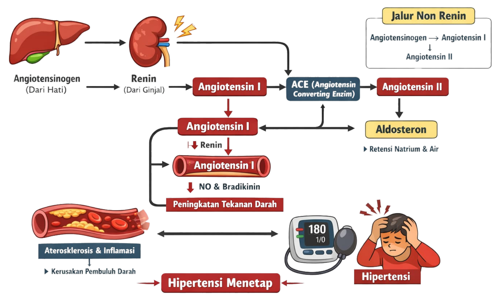
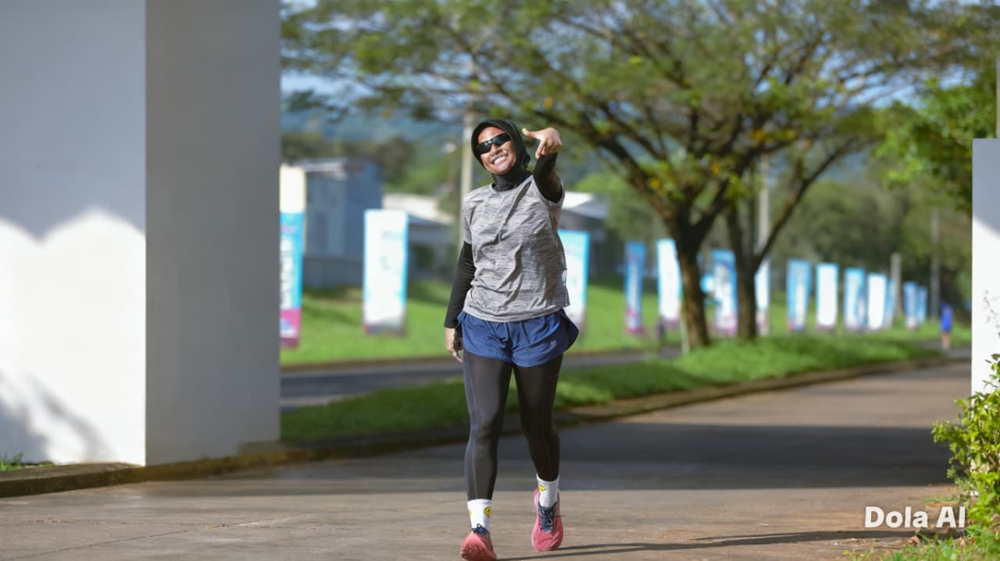
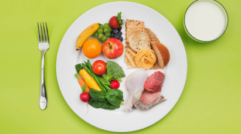
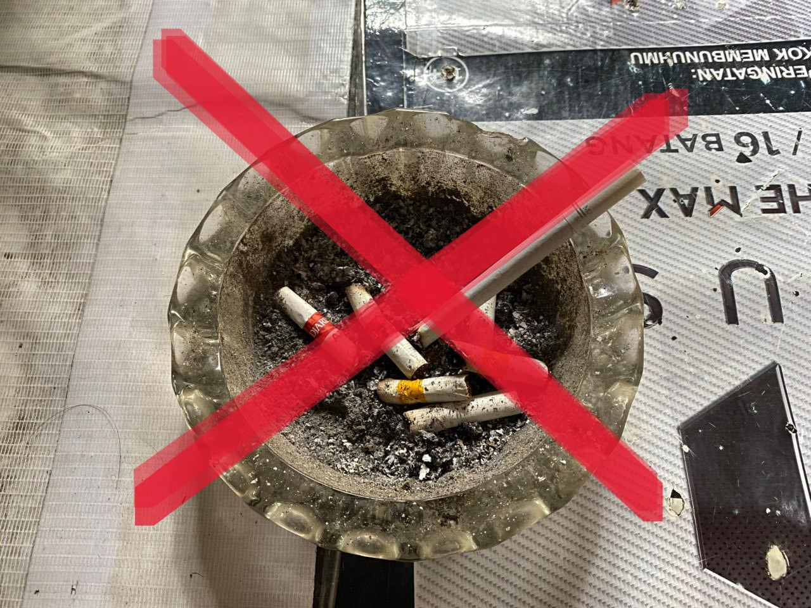
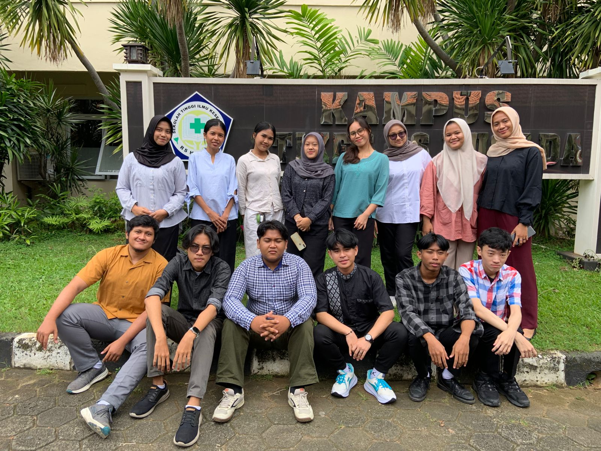
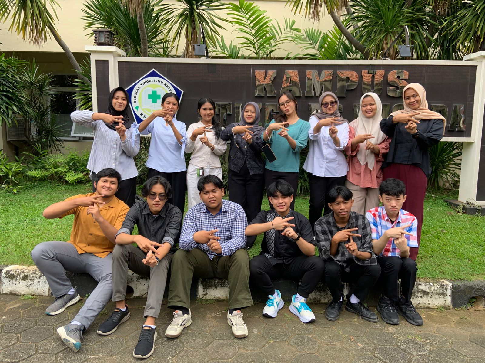

Apa itu hipertensi?
Hipertensi adalah kondisi ketika tekanan darah berada di atas normal (≥140/90 mmHg) secara terus-menerus. Penyakit ini sering tidak menimbulkan gejala, tetapi dapat menyebabkan komplikasi serius seperti penyakit jantung, stroke, dan gangguan ginjal. Karena itu, penting untuk rutin memeriksa tekanan darah dan menjaga pola hidup sehat.
Anatomi Fisiologi
Tekanan darah tinggi yang sering tidak bergejala
Anatomi

Fisiologi
- Sirkulasi Sistemik
- Sirkulasi Pulmonal
- 3. Sirkulasi Coroner
Sirkulasi sistemik merupakan sirkulasi darah yang mengaliri seluruh tubuh. Sirkulasi ini berlangsung ketika darah bersih yang mengandung oksigen mengisi serambi kiri jantung melalui vena pulmonalis, setelah melepaskan karbon dioksida di paru-paru.
Sirkulasi darah dari jantung menuju paru-paru dan sebaliknya. Sirkulasi ini berlangsung saat darah yang mengandung karbon dioksida dari sisa metabolisme tubuh kembali ke jantung melalui pembuluh vena besar (vena cava).
Sama seperti organ tubuh lain, jantung juga membutuhkan asupan oksigen dan nutrisi agar dapat menjalankan fungsinya dengan baik. Darah yang membawa nutrisi dan oksigen ke otot-otot jantung akan dialirkan melalui pembuluh arteri koroner.
Penyebab & Dampak
Menjaga tekanan darah cegah hipertensi
Penyebab
- Konsumsi garam berlebih
- Kurang aktivitas fisik
- Obesitas
- Stres berlebihan
- Penyakit jantung
- Stroke
- Gangguan ginjal
- Demensia Vaskular
- Naflah Syahira Putri Rosani (Jakarta)
- Alma Trimaulia (Bekasi)
- Shifa Khaira (Lampung)
- Pandu Nikhamo Gea (Nias)
- Sifa Nurfatimah (Bekasi)
- Kenny Krystyan (Jakarta)
- Muhamad Alif Rizki (Bekasi)
- Ranny Laura Dewi Megatadoe (Jakarta)
- Aurelia Syafitri (Jakarta)
- Muhammad Fahmi (Bogor)
- Davino Alfianto (Jakarta)
- Liani Putri Cahaya (Jakarta)
- Andra Fakhri Ramadhan (Jakarta)
- Oviana Aro (Flores)
Hipertensi merupakan penyakit yang terjadi akibat kombinasi berbagai faktor, seperti pola makan tinggi garam dan lemak, kurangnya aktivitas fisik, stres yang berlangsung lama, kelebihan berat badan, serta kebiasaan merokok dan konsumsi alkohol. Selain itu, faktor keturunan dan pertambahan usia juga dapat meningkatkan risiko seseorang mengalami tekanan darah tinggi.
Dampak
Hipertensi menyebabkan kerusakan sistem peredaran darah karena tekanan tinggi yang terus-menerus membuat pembuluh darah menebal dan menyempit, sehingga aliran darah ke organ vital terganggu. Kondisi ini dapat menimbulkan komplikasi serius seperti stroke, penyakit jantung, dan gagal jantung akibat menurunnya kemampuan jantung memompa darah.
Patofisiologi Penyakit Hipertensi

Pencegahan
Cegah Hipertensi
Seseorang dikatakan mengalami hipertensi ketika hasil pengukuran tekanan darah berulang menunjukkan nilai tinggi.
Monitoring
Pantau Secara Berkala
Monitoring hipertensi secara rutin penting untuk mencegah komplikasi dan menjaga tekanan darah tetap terkontrol.
Ayo Biasakan!
Untuk mencegah hipertensi, biasakan menjalani hidup yang lebih sehat mulai dari hal sederhana, seperti mengurangi makanan asin dan berlemak, lebih sering makan buah dan sayur, rutin bergerak atau olahraga ringan, menjaga berat badan, berhenti merokok, mengurangi alkohol, mengelola stres, cukup istirahat, serta rajin mengecek tekanan darah agar kesehatan tetap terjaga.

Aktivitas Fisik Yang Rutin

manajemen berat badan dengan menjaga pola makan

Hindari faktor risiko
Team

